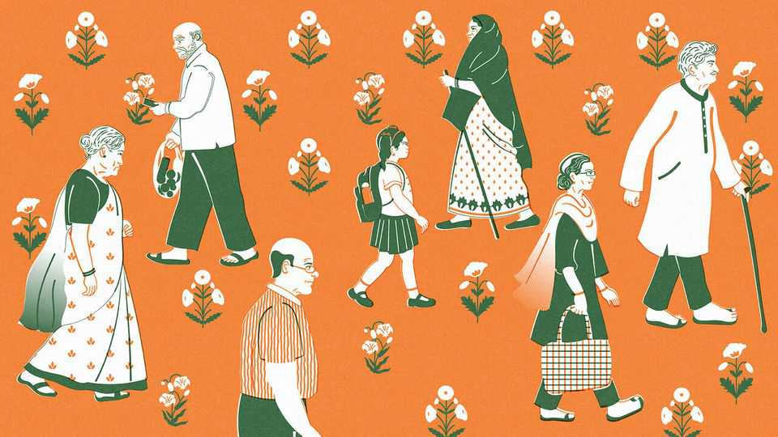
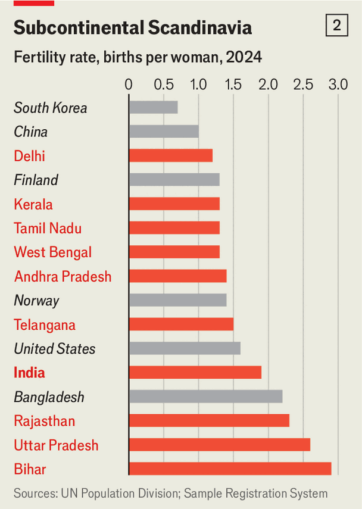
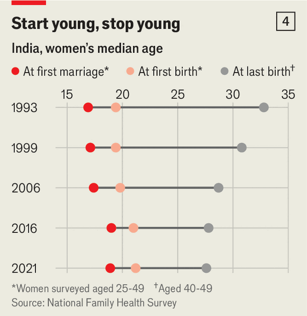
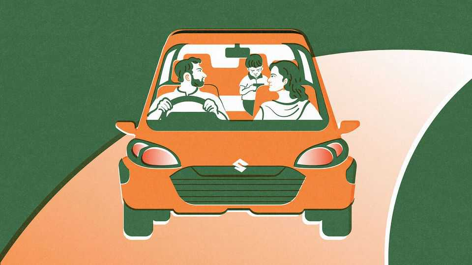

India’s population will soon be falling—probably quite fast
Neither widespread poverty, nor high rates of marriage nor relatively young mothers are sustaining fertility
June 4th 2026

IN THE SPRAWLING slum in Delhi where Parul Gayen lived in the 1970s, children were everywhere. It was not unusual then that her mother had been one of six, or her grandfather one of 11. Swapan, the handsome boy whom she often saw cycling to work, and later married at 16, had six siblings—the seventh did not survive infancy. But times have changed, says Ms Gayen, who is now 58 and lives with Swapan in a one-bedroom flat nearby. Of the couple’s three grown-up kids, only two decided to have children of their own. Both stopped at one. “One child feels lonely,” she says.
In 1950 India’s population was 360m. The average woman had six children—roughly the same as an American woman a century earlier. Today, with a population of 1.45bn, India accounts for a sixth of humanity. It surpassed China as the world’s most populous country in 2023 and has kept growing. But its total fertility rate (TFR), the number of births a typical woman has over her lifetime, has fallen to 1.9 (see chart 1), below the level needed to keep the population stable in the long run. Although the population will keep growing for a spell, as the generation that are currently children themselves become parents, a future contraction is inevitable unless the fertility rate rises back above 2.15. In practice, it is likely to keep falling, accelerating the impending shrinkage. In Delhi, for instance, the TFR is 1.2.
The rich world and many middle-income countries are awash with anxiety about declining fertility, shrinking workforces and impending or intensifying falls in population. Politicians often badger or bribe parents to have more children, with little success. Now India, once a source of angst about exponential population growth, is joining the same club. New school textbooks, to be published this summer, will warn of the perils of too few, rather than too many, children. In May Chandrababu Naidu, the chief minister of Andhra Pradesh, a southern state of about 55m, announced a 30,000 rupee ($315) payout for couples who have a third child.

As recently as 2019 Narendra Modi, the prime minister, warned of a “population explosion”. But the government’s thinking has flipped, says Sanjeev Sanyal, an adviser to Mr Modi. Today officials worry that India is on a similar path to China, whose population has been shrinking since 2021. Fertility has fallen much further and faster than expected, says Neelkanth Mishra, chief economist of Axis Bank. In both Tamil Nadu, a state of roughly 77m, and West Bengal (100m) the TFR stands at 1.3, the same as in Finland (see chart 2). The average for urban India is 1.5. For a long time demographers thought poor northern states would delay India’s demographic transition. Now they seem to be converging with wealthier, less teeming parts of the country.
Some might see a shrinking population as a blessing. After all, India’s infrastructure often seems inadequate: think of commuters cramming themselves into Mumbai’s local trains, for instance. Yet the prospect of an India with fewer children is not an entirely comforting one, either. It would get old before it gets rich, making for a difficult demographic transition. The effects would ripple through its society, its economy and its politics.
India’s extraordinarily fertile land and largely reliable monsoon help explain why it accounts for 2.4% of the world’s land mass but 18% of its people. Its population was given a further boost by the medical advances of the late 20th century. In 1950 a quarter of children did not survive to their fifth birthday; by 2000 only a tenth died young. India went through this transition in mortality at an unusually early stage of development, when its birth rates remained very high, says Sonalde Desai of the University of Maryland.

That combination made India exhibit A for population alarmists. It was a visit to a “hellish” slum in Delhi in the 1960s that inspired Paul Ehrlich, an American biologist, to write “The Population Bomb”. He warned that the battle to feed humanity was lost and that India was bound to starve. He was completely wrong, but extremely influential. His work informed a shameful drive in the 1970s to curb population growth, in which Indira Gandhi’s government forcibly sterilised some 10m men.
Subsequent governments, whether led by Gandhi’s party, Congress, or the Hindu nationalists of the Bharatiya Janata Party (BJP), have largely enacted policies that enable family planning and reproductive choice, says Poonam Muttreja of the Population Foundation of India, a think-tank. In the 1990s the decline in fertility accelerated, as more girls went to school and the country got richer. Kerala, a southern state of 36m where the TFR is 1.3, has been closing schools and importing workers for decades. Other places are catching up.
The UN still forecasts that India’s population will keep growing until the 2060s and then fall slowly. This is based on a giant assumption: that fertility rates will stabilise, starting tomorrow. But there are only a handful of countries in the world in which fertility has fallen and then rebounded. “There is nothing natural or inevitable about a rate of two,” says Dean Spears, an economist. “There is no sign of stabilisation yet,” notes Rukmini S. of Data for India, a think-tank.
Demographers at the University of Washington’s Institute for Health Metrics and Evaluation (IHME) have produced a more plausible forecast. It shows India’s population peaking in 21 years and then falling as sharply as it has risen. By the end of the century India’s population would be just over a billion—a contraction of nearly half a billion. (The UN also produces high- and low-growth forecasts; the low one is similar.) Another model, by S. Irudaya Rajan, an Indian demographer, foresees India’s population peaking in the 2050s—a little later than IHME, but much sooner than the UN—before declining rapidly.
Few experts anticipated this, for several reasons. One is a paucity of data. The last full census was carried out in 2011. A follow-up is now belatedly under way, but the wait has forced demographers to patch together data from other surveys, which may have obscured the speed of the decline.
Another factor befuddling demographers is India’s relative poverty. Its GDP per person at purchasing power parity was only $7,000 in 2020 when fertility fell to the replacement rate, the level at which the population will stop growing in the long run. That is much lower than in most countries that have passed the threshold (see chart 3). “In the past in demography 101 we used to teach that countries reach a certain per-capita income, women get educated and join the labour force, then you get low fertility,” says Jesús Fernández-Villaverde of the University of Pennsylvania. But fertility is now low in many poorer countries, too.
In some ways India’s trajectory reflects what the evidence has long shown: by far the most important factor for fertility is whether girls go to school, says Lant Pritchett of the London School of Economics. Those with at least some education have a greater degree of autonomy, and over time this leads to fewer children. Falling fertility in India now reflects a surge in girls’ enrolment in school since the 1990s. If a country is able to provide schooling for girls at an earlier stage of development than is typical, it seems, fertility will start falling earlier, too.
But India’s experience also flies in the face of some conventional wisdom about fertility. Conservatives in Western countries often blame falling fertility there on the decline of marriage and the high proportion of women who work. It is true that many Western women complain that they end up having fewer children than they would have liked, because the difficulty of balancing family and career (or of finding a suitable partner) means they start having children relatively late in life.
Yet India, where more than 90% of women get married and only 33% work, is seeing fertility slump, too. Although childbearing happens a little later than in Ms Gayen’s day, the average Indian woman still ties the knot at 19 and has her first baby at 21 (see chart 4). In other words, age and career cannot be at fault, at least in India’s case. In fact, even as fertility has fallen, surveys suggest that Indian women would like even fewer babies. In many states desired fertility is around 1.5 children. The majority of women get sterilised once they have finished having kids, which suggests they are not hankering for more.
For women across the country, having fewer children has become a powerful cultural norm. A traditional Indian wedding blessing goes, “May you be the mother of a hundred sons.” But the attitude of modern Indian parents can be likened to an old story from the Mahabharata, a Hindu epic. The sage Agastya asks his wife Lopamudra whether she wants ten good sons or one super-son with the combined heroism of ten. Lopamudra chooses the super-son.

Three factors explain this shift. First is a change in the aspirations of modern Indian parents. A typical explanation comes from Sanjini Raman, a 42-year-old mother in Chennai. She says she and her husband decided, “All our resources should go to one because if it’s two it gets divided.” It costs around 3.5 lakh rupees ($3,650) to send her daughter to a private school and to pay for extra tutoring.
Demographers call this the “quantity-quality trade-off”, and it dominates conversations between Indian spouses. Ms Raman says that most of her daughter’s classmates are from one-child families, which is common in southern India. The proportion of Indian children in fee-paying schools rose from 31.7% in 2015 to 38.8% in 2025. This trend is not confined to richer states. Surveys in Bihar (one of India’s poorest states, with 130m people) and Uttar Pradesh (the most populous, with 240m) suggest that many poor parents are choosing to have just one child so that they can afford at least some private tuition.
A second factor discouraging lots of children is the waning of the tradition of living in an extended family. As recently as 2001 around half of Indian families lived in houses with several generations—grandparents, parents, children, aunts, uncles, cousins—under one roof. Now 70% or so live in nuclear families, according to government data, owing to urbanisation and changes in the labour market. This makes child care a bigger burden and creates an incentive to limit family size. But most Indian men do not seem to have noticed. “My husband sometimes washes his own plate,” says Kavitha Kannan, a farmer and mother of two from Tamil Nadu.
In the past, as the old blessing suggests, another consideration motivated couples: a strong preference for boys. That helped to keep fertility higher, because couples would keep having children until they had a boy. But “boy preference” has fallen dramatically: the data show that many Indian parents are content with a girl.
Third, even if education and family structures shape parents’ thinking, it is reinforced by culture. Having fewer children has become aspirational, and that is being shaped by changes in technology and access to information. A study has found that the spread of cable television to villages in the 2000s led to a fall in the number of pregnancies, which the author put down to soap operas depicting urban, middle-class women with small families.
It is possible that smartphones—which are becoming ubiquitous, even in poor villages—are having a similar compounding effect. There is as yet scant evidence that their spread has accelerated fertility’s fall. But it is likely that smartphones help disseminate cultural norms more rapidly. In Nagepur, a village in Uttar Pradesh, women say they see lots of videos that depict small families and discuss how hard it is for youngsters to find jobs. Mr Rajan likens low fertility to a “contagion”: “What happens in Kerala ends up in Bihar,” he says.

That all this is already leading to smaller families and paving the way for a contraction in population is beyond dispute. The only question is how far fertility will fall. Some demographers suggest that strong marriage and childbearing norms will act as a floor, sparing India a baby drought as severe as, say, South Korea’s. Others flip this on its head, arguing that it is remarkable that fertility has already fallen so low despite such norms. They speculate that in the coming decades more Indian women will opt out of marriage and childbearing altogether.
Even if India does not become South Korea, the speed of its demographic transition will have far-reaching consequences. Most obviously, it will get old before it gets rich. In Kerala, where almost a fifth of the population is over 60, the government has just created a department for ageing. The state has the most comprehensive social-safety net in India but, even so, only 19.4% of the workforce belong to any kind of pension scheme (the national figure is 12%). Providing for the growing ranks of elderly Indians seems a remote prospect.
Yet the decline of the extended family undermines the assumption that children will care for parents in their old age. In south India rich-world-style care homes are popping up. In rural places more basic forms of care for the elderly are appearing, centred around yoga and gossip. But families unable to find or afford care, particularly for those with serious illnesses such as dementia, may be forced back together. Cases of elderly relatives abandoned at mass gatherings, such as the Kumbh Mela, a Hindu pilgrimage, are on the rise.
The strains on family ties are exacerbated by another trend, a boom in internal migration. Southern states have long relied on labour from the North and East, particularly in hotels and restaurants. But the flows of migrants are increasing, to provide workers for factories and care homes, among other jobs. At the Athulya care facility in Chennai, the capital of Tamil Nadu, the staff are almost all young women from the state of Odisha. The pull of migration will see more elderly Indians left behind in the village. Some aggrieved parents are already taking to social media to castigate their absent children.
A more rapid demographic transition means that the share of India’s population that is of working age could peak as soon as 2030. India’s workforce can continue to grow even as its population ages because many working-age people are under-employed. In the long run the economy will need to make better use of women in particular, says Mr Mishra of Axis Bank.
Demographic concerns already infuse politics. Mr Modi’s BJP likes to stoke fears that Hindus (around 80% of the population) will be overrun by Muslims (around 15%). Although fertility among Muslims is indeed higher, it too is falling fast and the difference is mainly because Muslims are poorer. Nonetheless in February Mohan Bhagwat, the leader of the RSS, a huge Hindu-nationalist social organisation, exhorted patriotic Indians to have three children to help with “population stabilisation”.
Southern states, meanwhile, worry that Mr Modi will “punish” them for their lower birth rates by trimming their seats in parliament. There may also be tensions between internal migrants and their adoptive states. Most southern politicians realise that migrants boost the economy, but there is some griping about an influx of outsiders who do not speak the local language. It is easy to imagine the north-south divide becoming more fraught.
For now, expect politicians of all stripes to cast around for policies to promote baby-making, like Mr Naidu. Yet evidence from around the world suggests that exhortations and bungs will not work. Fertility seems to be driven by forces too powerful for states or religious leaders to control very easily. Mr Rajan points out that India’s fertility has been declining for 70 years. The odds of a sudden reversal are slim. ■
Stay on top of our India coverage by signing up to Essential India, our free weekly newsletter.